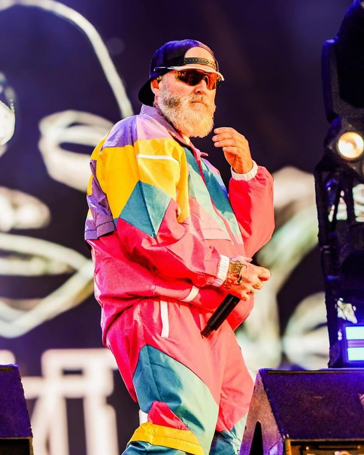
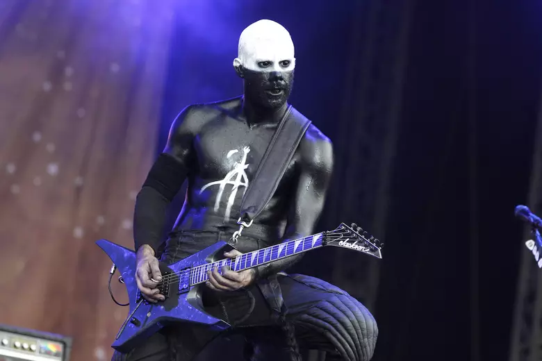
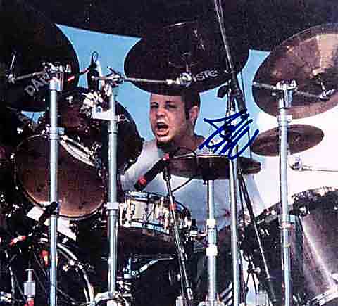
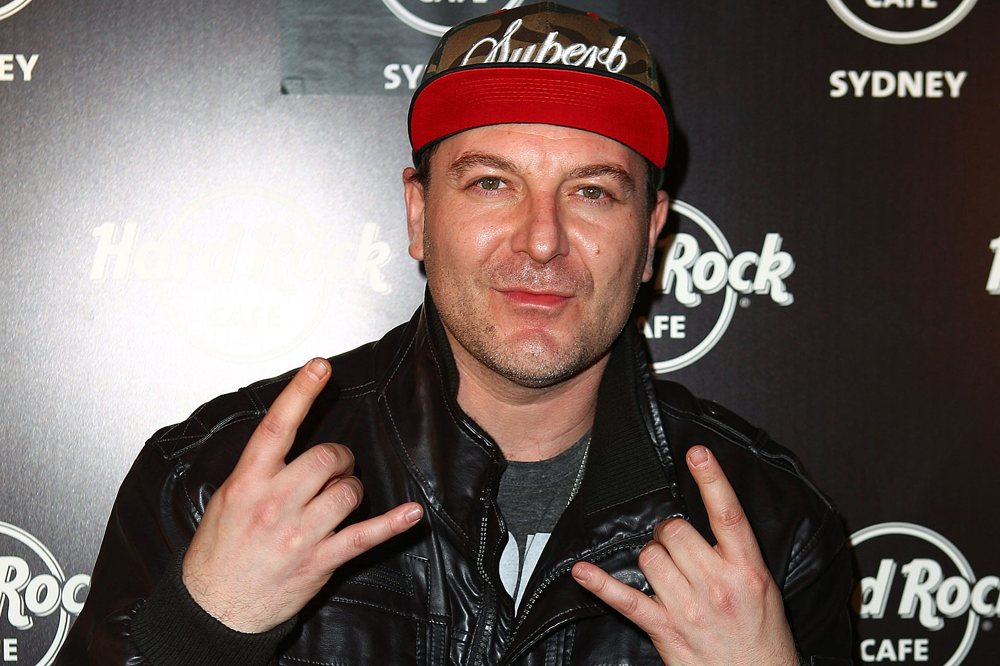
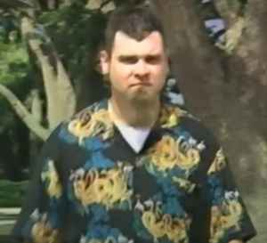
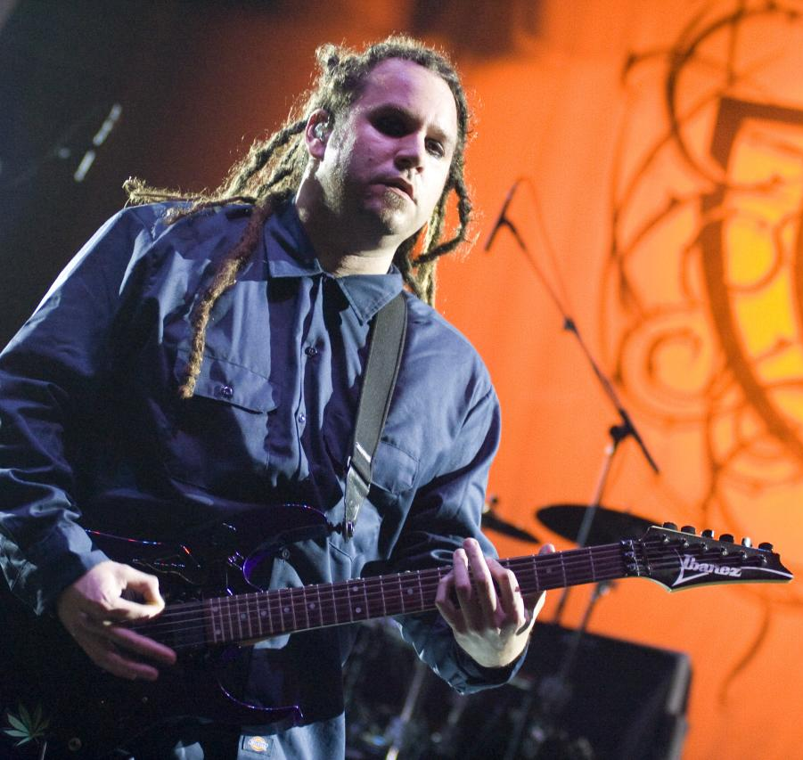

Limp Bizkit – amerykański zespół muzyczny wykonujący muzykę głównie z gatunku nu metal i rap metal, założony w 1994 roku w Jacksonville na Florydzie.
| Muzyk | Instrument | Od kiedy w zespole | Zdjęcie |
|---|---|---|---|
| Fred Durst | Wokal | 1994 |  |
| Wes Borland | Gitara | 1994-1996, 1999-2001, 2009-2012, 2014-2015, 2018 |  |
| Sam Rivers | Gitara basowa | 1994 |  |
| John Otto | Perkusja | 1994 |  |
| Leor Dimant | DJ, sample | 1996–2005, 2009–2012, 2017 |  |
| Muzyk | Instrument | Od kiedy w zespole | Zdjęcie |
|---|---|---|---|
| Rob Waters | gitara | 1994-1997 |  |
| Terry Balsamo | gitara | 1995 |  |
| Mike smith | gitara | 2002-2004 |
Rok wydania: 1997
Rok wydania: 1999
Rok wydania: 2000
Rok wydania: 2003
Rok wydania: 2011
Rok wydania: 2021